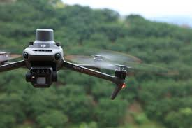

AGRICULTURA DE
PRECISIÓN
Monitoreo inteligente de cultivos mediante sensores multiespectrales y drones. Detectamos anomalías antes de que sean visibles al ojo humano.
EL FUTURO DEL CAMPO
Maximizamos el rendimiento de tus tierras minimizando los costos operativos. En Geoaxis utilizamos vehículos aéreos no tripulados (UAV) equipados con cámaras multiespectrales para escanear varias hectáreas en un solo vuelo.
Esta radiografía agrícola nos permite generar mapas de prescripción exactos, optimizando el uso de fertilizantes, agua y pesticidas, llevando tu producción al siguiente nivel de rentabilidad y sustentabilidad.

ANÁLISIS MULTIESPECTRAL
Índices de Salud (NDVI)
Medimos el vigor de la biomasa para identificar zonas con deficiencias nutricionales o plagas en etapas tempranas.
Estrés Hídrico
Mapas térmicos que revelan la temperatura del follaje, permitiendo optimizar los sistemas de riego y detectar fugas.
Conteo y Sobrevivencia
Algoritmos de IA para realizar inventarios exactos de plantas, árboles frutales y estimación de rendimiento de cosecha.
RADIOGRAFÍA DE PRECISIÓN
A través de nuestros vuelos multiespectrales, GEOAXIS proporciona la ayuda especializada que necesitas para mejorar tus cultivos: haz más con menos, AHORRA AGUA y detecta problemas antes de que sea tarde.

Vigor Vegetal
¿QUÉ ES?
El índice más confiable. Mide la cantidad de biomasa verde y el vigor fotosintético de la planta.
¿QUÉ DETECTA?
Zonas de alto vigor fotosintético vs. zonas con deficiencias nutricionales o ataques de plagas.
TU AHORRO (ROI)
Focaliza la aplicación de fertilizantes solo donde la planta lo necesita.

Consumo de Nitrógeno
¿QUÉ ES?
Similar al NDVI pero usa la banda verde. Es más sensible a los cambios en la clorofila cuando la planta está muy densa.
¿QUÉ DETECTA?
Deficiencias tempranas de nitrógeno y madurez del cultivo.
TU AHORRO (ROI)
Optimiza el riego. Detecta estrés hídrico antes de que el NDVI lo vea.

Zonas Críticas
¿QUÉ ES?
Usa la banda "Red Edge" (el borde rojo) para penetrar más en el dosel de la planta y cultivos densos o de tallo alto.
¿QUÉ DETECTA?
Salud del cultivo en etapas críticas del ciclo de vida (cuando el NDVI se satura).
TU AHORRO (ROI)
Detecta problemas en cultivos densos (como maíz) antes de que sea tarde.